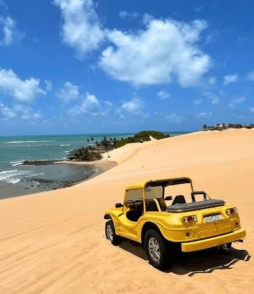
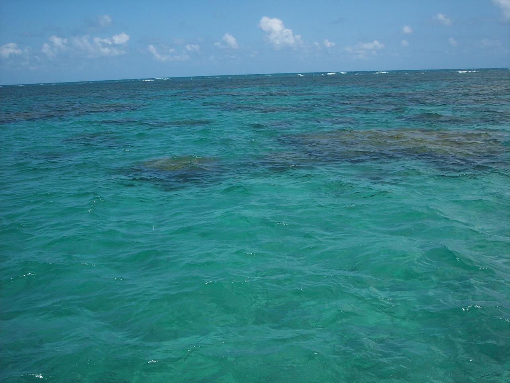

Pipa
Um dos destinos mais conhecidos do litoral potiguar, com praias, falésias, vida noturna e contato com a natureza.
Descubra Natal e o litoral do Rio Grande do Norte.
Natal é conhecida por suas dunas, praias de águas mornas, falésias coloridas e paisagens que encantam visitantes do Brasil e do mundo.
Este site será um guia para conhecer melhor a capital potiguar e os principais destinos do litoral do Rio Grande do Norte.
O estado possui lugares incríveis para visitar, desde praias famosas até vilarejos tranquilos à beira-mar.
Um dos destinos mais conhecidos do litoral potiguar, com praias, falésias, vida noturna e contato com a natureza.

Famosa pelos passeios de buggy, pelas dunas e pelas lagoas que fazem parte do roteiro turístico de Natal.

Conhecida pelos parrachos, piscinas naturais ideais para mergulho e observação da vida marinha.
O litoral do Rio Grande do Norte reúne praias urbanas, praias mais reservadas e cenários perfeitos para descansar.
Natal pode ser visitada durante todo o ano, mas é sempre importante pesquisar sobre clima, feriados e períodos de maior movimento.
Roupas leves, protetor solar, chapéu, água e uma câmera são itens úteis para aproveitar melhor as praias e dunas.
Uma boa ideia é separar dias para conhecer Natal, o litoral norte, o litoral sul e destinos próximos, como Pipa e São Miguel do Gostoso.
Em breve, esta seção poderá ter informações de contato, redes sociais ou um formulário para mensagens dos visitantes.